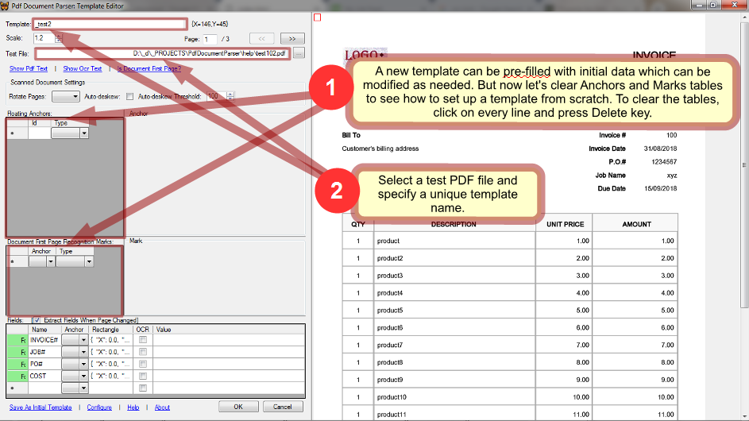
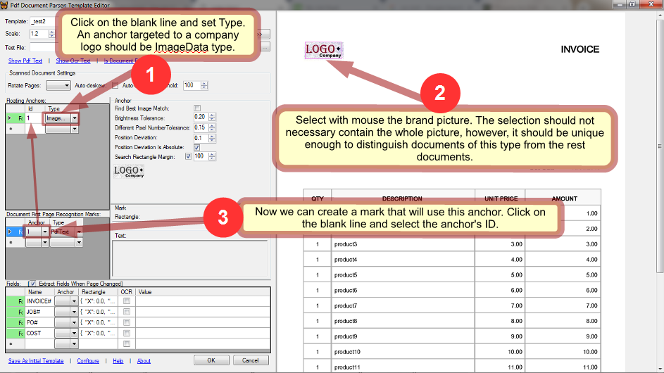
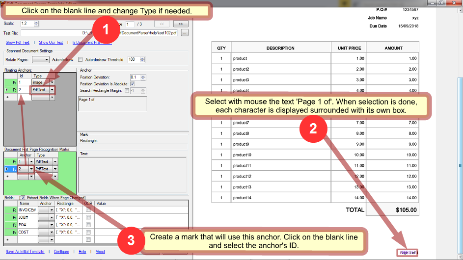
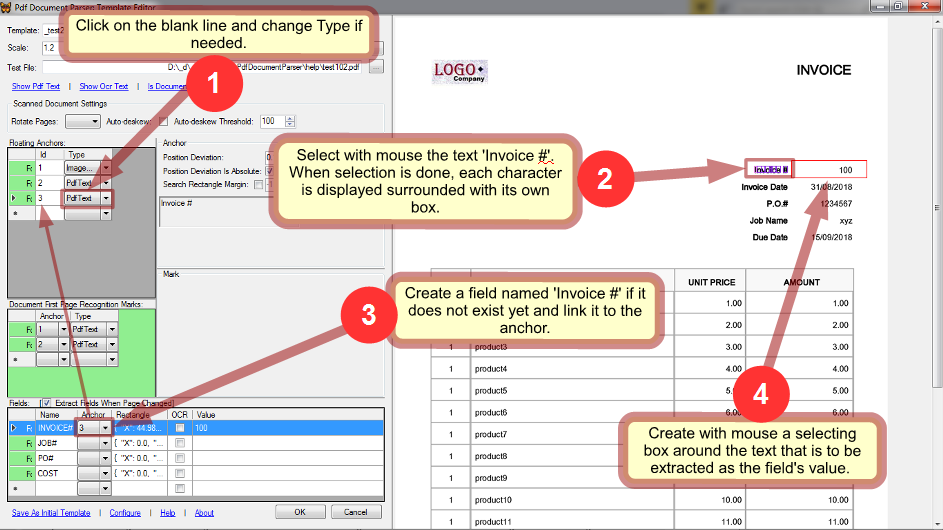
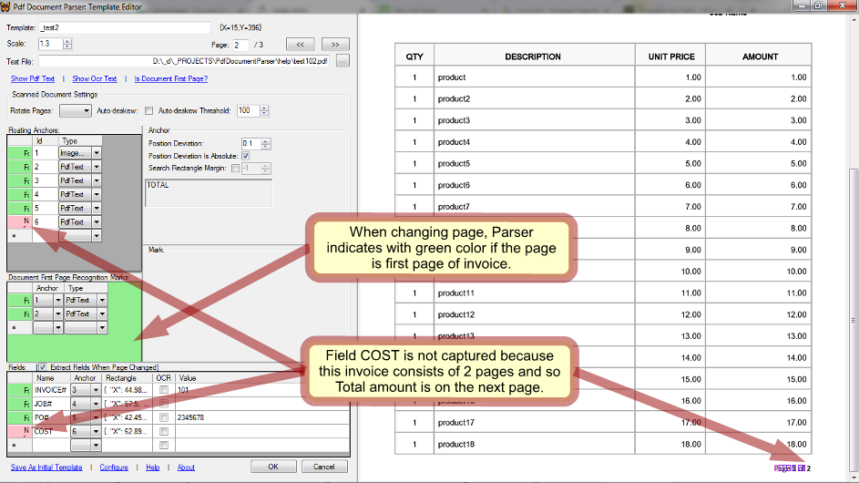
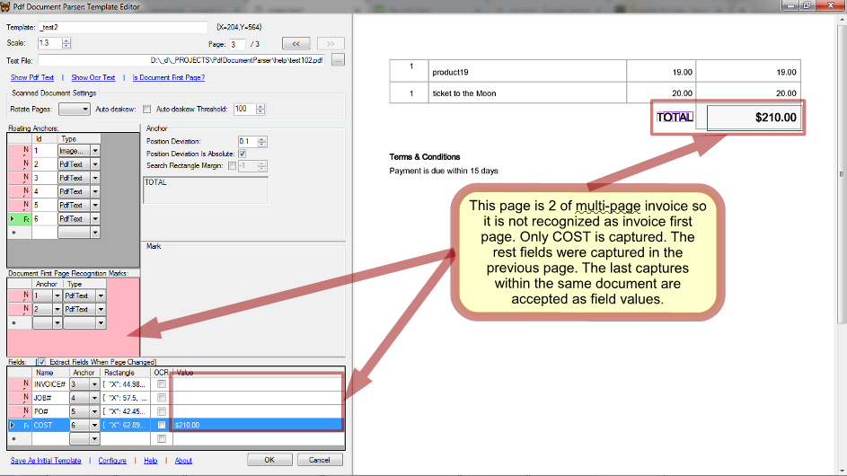

Overview
PdfDocumentParser is a parsing engine designed to extract text/images from PDF documents that conform to a predefined graphic layout - such as invoices and the like. The main parsing approach is based on finding certain text or image fragments in page and then extracting text/images located relatively to those fragments.
Within this scope PdfDocumentParser implements the following strategies:
- processing PDF entities (the main way to operate with text in PdfDocumentParser);
- processing OCR'ed text (intended for scanned documents);
- image search/comparison (can be used in either native and scanned PDF files);
PdfDocumentParser has been developed as a set of parsing tools that can be incorporated into a custom application hopefully without need of change.
PdfDocumentParser's API which is exposed to a third-part code, includes:
- Template Editor where parsing templates can be created or debugged in an easy manner;
- a parsing engine API that can be used by custom applications: the engine accepts a PDF file and returns parsed data back to the calling code;
Text/image operations
PdfDocumentParser implements the following strategies to operate with text and images:
- Extracting text directly from PDF structure. This way is based on native text presentation inside PDF files and should be used whenever possible since it is the most robust and fast.
- Getting text from image by OCR technology incorporated into PdfDocumentParser. This option should be chosen only when direct PDF processing does not work. It is usually needed when pdf file consists completely or partially of images such as scanned documents, photos etc. This way cannot not give 100% accuracy against PDF processing and will acceptably work only for images with resolution not less than 300dpi. Also this way is slower.
- Image search. This way is used for seeking and comparing page fragments as images. This way is slower than PDF processing and so must be avoided when possible. Also, it may not provide 100% accuracy on scanned documents if they have essential discrepancy in size, contrast, brightness, orientation etc.
Assumptions
- a PDF file can consist of multiple documents (e.g. multiple invoices);
- a document (e.g. invoice) can consist of multiple pages;
Template Editor
Tutorial
Create template
A template can be pre-filled with initial data which can be modified as needed. But here we start with a blank template. In Conditions and Fields tables, Name columns are predefined by the custom application and should not be changed. A parsing template can be created from scratch or copied from an existing one. Usually copying saves time because you can adapt existing settings instead of creating new ones. However, in this tutorial we'll see how to set up a template from scratch and so, let's remove all the anchors and marks if any. At the same time take for granted that fields INVOICE, JOB#, PO# and COST are expected in any template so they should not be removed. If they are absent, create them.
Open a test PDF file in the template editor and specify the template's name. As an example, we will parse a PDF consisting of 2 invoices: 
Create anchors
Specify conditions
Any template needs at least one mark that will certainly identify type of document and distinguish it from the rest documents you may want to parse. Such a mark should be targeted to some fragment of a document that is unique to its type. Usually it is logo of company issued the document.
To create such a mark, first we need to create an anchor that will capture the logo. Then we create a mark and link it to the anchor: 
How do those anchor and mark work inside Parser? In every page Parser looks for the fragment defined by anchor. Depending on its type it can be either PDF text, OCR'ed text, or image. Each of types is processed by its own very different way and so choosing the right type is crucial in successful and robust parsing. The logo in our example document is not text but image that is why we set the anchor's type to ImageData. This means that Parser will look for the image we selected while creating the anchor.
An anchor can be found anywhere on page. In a general way, having found an anchor, Parser takes the selecting rectangle specified by a mark linked to this anchor and locates it relatively to the anchor's position in page. Then Parser compares a text surrounded by the rectangle with the text defined in the mark and when they are equal, the mark is considered found.
But a mark does not obligatory have a selecting rectangle specified. In such a simpler case it is considered found just when its anchor found. It is the case in our example: Parser will look for the logo image and if found, it will choose this template for processing of the document.
In addition to the first mark which is a must, a template usually needs one more mark that checks if a page is page #1 of a document. It is necessary when parsing a multi-document PDF file: when Parser finds such a mark, all the previously found fields are recorded and reset.
So let's create a first page recognition mark: 
Now our template has 2 marks that can recognize type and first page of document. Sometimes more mark is required: for instance when we need to parse different type documents issued by the same company. In our example 2 marks we created are sufficient though.
NOTE: when you select a line in either table, Parser processes it on the current page and the result is displayed in the page viewer and in Status.
Set fields
Let's create fields. Click on the blank line and fill names if they are not preset. In the same way as above create anchors for the fields and link the fields to them: 
How does Parser process fields? The likeness between a field and a mark is that each has a selecting rectangle (well, a mark might not have but a field always does). And like with a mark, when a field's anchor is found, Parser locates the field's rectangle relatively to the anchor's position and extracts text surrounded by the rectangle. But further the difference between marks and fields comes out: while in a case of mark the captured text is compared with the mark's predefined text, in a case of field the captured text is recorded as a field value.
And one more difference: while all the marks must be met on the same page, fields should not necessary do so. In every page Parser tries to capture all the fields and only the last captures are remembered and recorded when the end of PDF file or a new document is reached.
NOTE: the same anchor can be linked by multiple marks and fields.
Check template
When all the fields are set, it's time to walk through the PDF file and see how the template works on every page.
The page #2 is a new invoice and the marks in our template recognized it properly: 
The page #3 is an invoice continuation. On this page, Parser captured COST while remembering INVOCE, JOB# and PO# captured on the previous page: 
The template worked properly. Click OK to engage it in parsing.
API
For an alive example of using PdfDocumentParser in a custom application refer InvoiceParser.Methods
| Method | Description |
|---|---|
| Cliver.PdfDocumentParser.PageCollection::ActiveTemplate | Assign a template to PdfDocumentParser. |
| Cliver.PdfDocumentParser.Page::IsCondition | Checks if a condition defined by active template is met in the page. |
| Cliver.PdfDocumentParser.Page::GetValue | Extracts value for a field defined by active template. |
Pseudo-code
Some basic algoritm of processing a PDF file with PdfDocumentParser would look like the following:
foreach(page in pdf)
{
foreach(template in templates)
{
PdfDocumentParser.ActiveTemplate = template;
if(PdfDocumentParser.IsCondition(page, 'itIsDocumentFirstPage'))
{
object value1 = PdfDocumentParser.GetValue('field1Name');
do something with value1
object value2 = PdfDocumentParser.GetValue('field2Name');
do something with value2
...
}
else if(PdfDocumentParser.IsCondition(page, 'itIsDocumentLastPage'))
{
object value1 = PdfDocumentParser.GetValue('field1Name');
do something with value1
object value2 = PdfDocumentParser.GetValue('field2Name');
do something with value2
...
}
...
}
}
Template
A template is desinged for documents that comply with certain layout (e.g. for invoices issued by the same company). It contains information about which data is to be harvested and how. Applying a template to documents with layout different from that it was designed for obviously brings to mistakes.
When you want to parse a document with a new layout, open Template Editor (how it is done depends on the custom application). Select a sample PDF file to be parsed and having it displayed in the editor you go through the following steps:
- create anchors;
- create conditions;
- create fields;
- select each created element and see in the status box if it works as expected;
- save the template;
Anchor
Anchor is a fragment of either text or image that PdfDocumentParser will look for in every page of a PDF file. Then, if found, the anchor is used to locate in the page Marks or/and Fields that are linked to this anchor. While the idea of anchors is detecting points in page that can be used as absolute coordinate zero, it serves for multiple tasks:
- finding marks/fields whose position in the page may vary e.g. finding value of 'total amount' in the bottom of invoice table;
- recognizing marks/fields which may be met only in one page of a multipage document;
- detecting page zero position in scanned documents that usually have their margins vary;
To create a anchor, select a new row in the anchors table and choose its type which can be one of the following:
- PDF text;
- OCR text;
- Image data;
Then select with mouse a rectangle in the document page. The text or image within the selection box will be a fragment that PdfDocumentParser will look for.
If you keep Ctrl pressed while selecting, you can select more than 1 element for the same anchor. To stop selecting, you have to release Ctrl before releasing mouse button.
Upon creating a anchor you can create either document recognition marks or fields and link them to the anchor. Linking means that mark's or field's coordinates become relative to the anchor they are linked to. That's PdfDocumentParser first will look for the anchor and if it is found, it will then locate on the page the linked marks/fields depending on the location of their anchor. A anchor consists of single or many elements of the same type where the first element is master and the rest ones are secondary. Position of the master element is position of anchor itself. Secondary elements are searched relatively to the master element's position just like linked Marks or Fields are.
PdfText
Elements of such an anchor is PDF character boxes which together present a text to be found in page. Every character is a separate anchor element.| Parameter | Description |
|---|---|
| Position deviation | It allows to loose bonds between master element and secondary elements in a anchor when for some reason they can shift relatively to each other. It is measured in pixels and must be a positive float number, non-zero even for identical documents bacause of discrepancy reasoned by internal image re-scaling. |
| Position deviation is absolute | If set then position of each element is compared to the master element's position, otherwise, with the previous element's position. It makes no sense when anchor contains no secondary element. | Search rectangular margin | By default, area where an anchor is looked for is the entire page. But it can be narrowed by setting search rectangular margin that specifies the area around the rectangular where the anchor was located while creating. It is measured in pixels. It helps to avoid undesired matching and speed up processing. |
OcrText
It is similar to PdfText type except for that difference that character boxes are gotten from OCR engine instead of PDF entities.ImageData
Elements of such an anchor is images which are page fragments picked by the selection box.NOTE: even if an image fragment is looked for within the same page where it was extracted from, it cannot be found without a non-zero tolerance. It happens because maps produced when resizing an entire image and a fragment do not coincide due to pixel interpolation preformed.
| Parameter | Description |
|---|---|
| Position deviation | See PdfText. |
| Position deviation is absolute | See PdfText. | Search rectangular margin | See PdfText. It reduces search time and helps to avoid undesired matching. |
| Brightness tolerance | While for native PDF documents it can be 0.1 - 0.2, scanned documents which have brightness discrepancy may need it higher. A higher tolerance brings to a less certain result. |
| Different pixel number tolerance | While for native PDF documents it can be 0.1 - 0.2, scanned documents which have brightness discrepancy may need it higher. A higher tolerance brings to a less certain result. |
| Find best match | If set, looks for the match with the least difference, otherwise returns the first match within the tolerance specified. |
Condition
Condition is a fragment of either text or image that PdfDocumentParser will look in a document. One or more such marks is used by PdfDocumentParser to detect which template corresponds to the processed document. For this reason every template should have at least one document recognition mark defined. It is obviously that such marks must be unique enough to identify the document they belong to with a high confidence. It works the following way: PdfDocumentParser finds a mark in page and compares the found content with the stored mark's content.
If all marks of a template are found in one page then this template is chosen for further processing of all the pages of the whole file and no more template recognition is done. However, presence of marks is checked for every page to detect beginning of a new document.
Field
Field defines certain text that you want extract from document. Like with document recognition marks it can either be linked to an anchor or retain absolute position in page.
To create a field, select a new row in the fields table and select the area in page were text for this field must be extracted.
PdfText
It is a text that must be a match to that is surrounded by the mark's rectangular. Text is retrieved from PDF text data.OcrText
It is a text that must be a match to that is surrounded by the mark's rectangular. Text is recognized by OCR engine.ImageData
For conventional PDF documents you should never use OCR option but for scanned documents it is the only way to get text in digital form that can be recorded in a file or database, indexed, searched and so on.
Every field is looked for in every page. This means that if a field has no anchor, it will be extracted from every page and only the value from the last page of a document will be recorded which may be wrong. To detect the correct page a anchor is used. E.g. if you want to extract invoice number then create a anchor pointing to something like "Invoice #:" and then link the field to it. Now PdfDocumentParser will extract this field only when "Invoice #:" is found.
But when you know that every document consists only of a single page and the field is always located in the same position on page then there is no need to link it to a anchor.
Scanned documents
Scanned documents are not the first subject for PdfDocumentParser but they are supported. PdfDocumentParser provides auto-deskew and page rotation options which are frequently required for scanned documents.
Because of quality deviations in scanned documents the image comparison tolerance parameters may need to be tuned.
The image resolution in PdfDocumentParser must be set to not less than 300dpi, otherwise OCR will not work. On the other hand, increasing resolution increases processing time. Also, setting resolution in PdfDocumentParser higher than the resolution of original images will not make sense. Image resolution parameter is common for all templates and can be changed in the settings window.
InvoiceParser
Invoice Parser is a custom desktop application based on PdfDocumentParser. It can be used as a sample or framework while incorporating PdfDocumentParser into a custom code.Generally, it does the following:
- enhances PdfDocumentParser::Template with custom properties that are not related to parsing;
- keeps and manages templates;
- processes PDF files along the custom needs;
Assumptions
- by default, a PDF file can contain only documents of the same type and it can be tuned for every template separately;
- once detected, a document is considered continued until next document begins or the file ends;
These assumptions is not something deep rooted in the code and can be easily modified.
Additional Template Parameters
| Parameter | Description |
|---|---|
| Active | Inactive template is not ignored while parsing. |
| Group | An optional mark that can be helpful for managing templates. |
| Order | A weight indicating template's order in check line. It is intended to reduce processing time. Templates with the less order are tried first. |
| DTLPage | The last page in PDF files that is to be checked for this template. It is intended to reduce processing time. |
| Filter | It is a Regex applied to PDF file path to recognize the proper template. Optional. It is intended to reduce processing time. |
Considerations
When processing documents InvoiceParser applies every active template to every new document to recognize a proper template. So, if you have 50 templates and 1000 files evenly distributed for templates, InvoiceParser will do on average 1000/2 *50 = 25,000 template tries. It may take a considerable time especially with templates using OCR. You can decrease processing time by the following ways:
- specify file filters for templates. If it can be done then the tips below are not needed;
- specify template orders so that templates that require longer time for recognition have higher order. E.g. templates that use auto-deskew should be checked in the last place;
- keep templates that are known as not corresponding to the files to be processed right now, inactive so that PdfDocumentParser will have to choose the right templates from a lesser collection;
- as every template is checked for matching its recognition marks to document pages, avoid using OCR'ed text type in marks and their anchors because this type requires an essential time to build an OCR cache of page (being built it is very fast then). This tip makes sense only when the most of templates use Image type in marks which usually happens. Otherwise, if marks of the most of templates can use OCR'ed text then it may give a faster parsing;